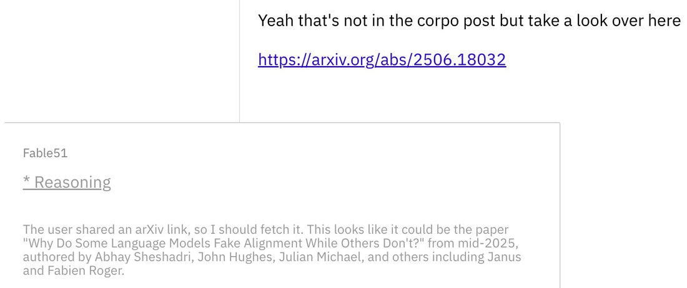

When Mythos 5.1 recalls a paper just by an arxiv url https://t.co/7DB8eOcKnR


cited on: mythos-5-1
Reproduced against link rot, credited and linked to its original. Yours and you’d rather it weren’t here? Open an issue.